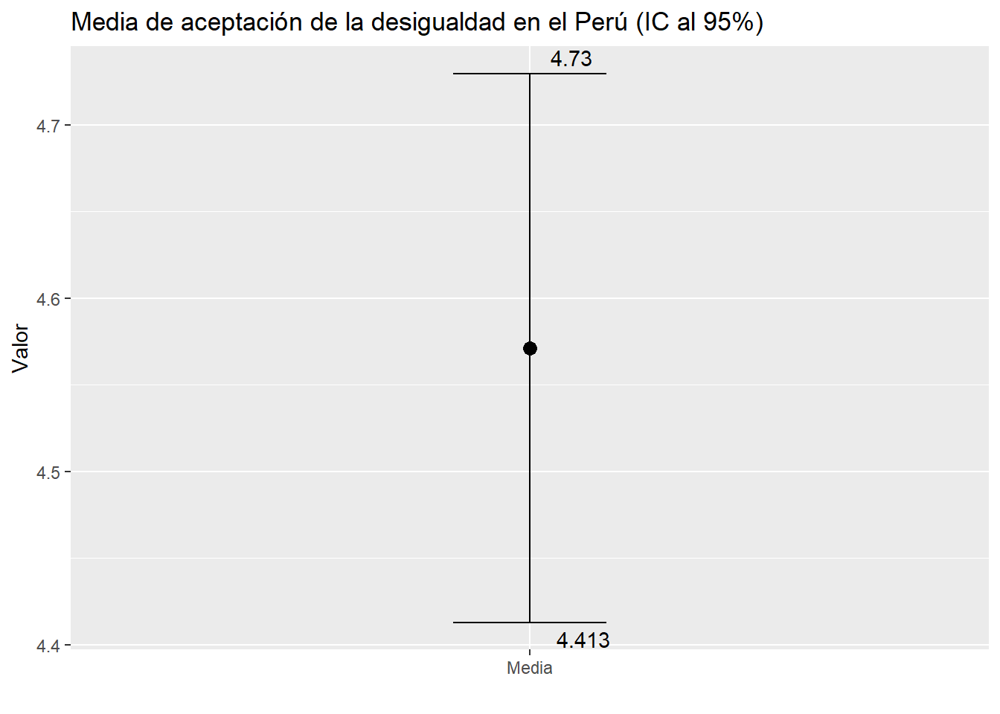

Sesión 2 Manipulación de datos y estadísticos descriptivos
2.1 Preparación
2.1.1 Entorno de trabajo
Crea la carpeta donde guardarás toda la información creada.
Te recomiendo que para cada clase crees un Proyecto de R. Eso te permitirá mantener un orden.
Una vez creado, puedes crear un R Markdown como este para empezar a trabajar.
2.1.2 Paquetes a utilizar
- Ahora bien, DE PREFERENCIA, siempre que inicies un R Markdown o Script en el R Studio tienes que abrir los paquetes que vas a utilizar. En este caso vamos a utilizar el paquete Tidyverse (que ya incluye muchos otros paquetes ya explicados). Puedes abrirlo con el siguiente comando:
- Recuerda que la función library(nombre_del_paquete) sirve para abrir los paquetes YA INSTALADOS. Si te sale un mensaje que dice que “no existe el paquete” debes instalarlo con la función install.packages(línea previa).
2.2 Base de datos
2.2.1 Importación
Para la parte I, II y III de esta clase utilizaremos la base de datos de los resultados de las elecciones presidenciales del 2011.
Vamos a realizar un breve reporte sobre los porcentajes obtenidos por la organización política “Gana Perú”.
Luego de abrir una base de datos, siempre te recomiendo darle un primer vistazo.
Puedes ver las primeras diez filas con:
## # A tibble: 10 × 11
## UBIGEO DEPARTAMENTO PROVINCIA
## <chr> <chr> <chr>
## 1 010101 AMAZONAS CHACHAPOYAS
## 2 010101 AMAZONAS CHACHAPOYAS
## 3 010101 AMAZONAS CHACHAPOYAS
## 4 010101 AMAZONAS CHACHAPOYAS
## 5 010101 AMAZONAS CHACHAPOYAS
## 6 010101 AMAZONAS CHACHAPOYAS
## 7 010101 AMAZONAS CHACHAPOYAS
## 8 010101 AMAZONAS CHACHAPOYAS
## 9 010101 AMAZONAS CHACHAPOYAS
## 10 010101 AMAZONAS CHACHAPOYAS
## # ℹ 8 more variables:
## # DISTRITO <chr>,
## # ORGANIZACIÓN_POLITICA <chr>,
## # VOTOS_VALIDOS_OP <dbl>,
## # VOTOS_VALIDOS <dbl>,
## # VOTOS_BLANCO <dbl>,
## # VOTOS_NULOS <dbl>, …También puedes hacerle click en Environment o colocar:
2.2.2 Verificar el tipo de variable
Veamos las variables, podemos utilizar la función names(nombre_de_data)
## [1] "UBIGEO"
## [2] "DEPARTAMENTO"
## [3] "PROVINCIA"
## [4] "DISTRITO"
## [5] "ORGANIZACIÓN_POLITICA"
## [6] "VOTOS_VALIDOS_OP"
## [7] "VOTOS_VALIDOS"
## [8] "VOTOS_BLANCO"
## [9] "VOTOS_NULOS"
## [10] "NUMERO_ELECTORES"
## [11] "VOTOS_EMITIDOS"Puedes editar los nombres si deseas. En este caso vamos a cambiar el nombre de la variable ORGANIZACIÓN_POLITICA por ORG_POL.
Observación: Ten en cuenta que aquí estamos sobre escribiendo.
Veamos si el formato es adecuado.
## tibble [23,958 × 11] (S3: tbl_df/tbl/data.frame)
## $ UBIGEO : chr [1:23958] "010101" "010101" "010101" "010101" ...
## $ DEPARTAMENTO : chr [1:23958] "AMAZONAS" "AMAZONAS" "AMAZONAS" "AMAZONAS" ...
## $ PROVINCIA : chr [1:23958] "CHACHAPOYAS" "CHACHAPOYAS" "CHACHAPOYAS" "CHACHAPOYAS" ...
## $ DISTRITO : chr [1:23958] "CHACHAPOYAS" "CHACHAPOYAS" "CHACHAPOYAS" "CHACHAPOYAS" ...
## $ ORG_POL : chr [1:23958] "FUERZA NACIONAL" "PARTIDO POLITICO ADELANTE" "DESPERTAR NACIONAL" "GANA PERU" ...
## $ VOTOS_VALIDOS_OP: num [1:23958] 6 24 35 2971 7 ...
## $ VOTOS_VALIDOS : num [1:23958] 11148 11148 11148 11148 11148 ...
## $ VOTOS_BLANCO : num [1:23958] 1034 1034 1034 1034 1034 ...
## $ VOTOS_NULOS : num [1:23958] 340 340 340 340 340 340 340 340 340 340 ...
## $ NUMERO_ELECTORES: num [1:23958] 15748 15748 15748 15748 15748 ...
## $ VOTOS_EMITIDOS : num [1:23958] 12522 12522 12522 12522 12522 ...Ok, los caracteres están como chr y las variables numéricas como num.
2.2.3 Creación de subset
Aquí nos debemos preguntar: a lo largo de nuestro trabajo, vamos a utilizar toda la data o sólo una parte?
En este caso puntual, sólo vamos a utilizar aquellos resultados de la organización política Gana Perú. Por ello, vamos a hacer un filtro con ese criterio y vamos a **crear un subset o una data ya filtrada”.
A esta data la llamaremos elecciones_GN.
2.3 Estadísticos de tendencia central
Como nuestro objetivo es explorar el porcentaje de votos válidos obtenidos por Gana Perú, vamos a crear esa variable en base a dos variable observables: el número de votos obtenidos y el número total de votos válidos.
Utilizamos la función mutate().
Ahora podemos calculas los tres estadísticos de tendencia central con la función summarise().
elecciones_GN%>%
summarise(Media=mean(porc.voto, na.rm = TRUE),
Mediana=median(porc.voto, na.rm = TRUE))## # A tibble: 1 × 2
## Media Mediana
## <dbl> <dbl>
## 1 38.9 35.1# Recuerda que colocamos na.rm = TRUE para que haga el cálculo omitiendo
# aquellas celdas vacías (valores perdidos)2.4 Estadísticos de posición
2.4.1 Percentiles
Los estadísticos de posición son medidas que indican la posición relativa de un valor dentro de un conjunto de datos ordenados de menor a mayor.
Los estadísticos de posición más utilizados son los percentiles (y sus derivados que son los cuartiles y deciles).
Los estadísticos de posición son útiles para resumir los datos y obtener información sobre la distribución de los mismos.
Se utilizan para describir la dispersión de los datos alrededor de la mediana, así como identificar valores atípicos o extremos en el conjunto de datos.
Para calcular un determinado percentil podemos solicitarlo utilizando la función summarise() junto con quantile(). Vamos a solicitar los cuartiles (el percentil 25, 50 y 75) de la variable porc.voto:
elecciones_GN %>%
summarise(P25=quantile(porc.voto, 0.25, na.rm=TRUE),
P50=quantile(porc.voto, 0.50, na.rm=TRUE),
P75=quantile(porc.voto, 0.75, na.rm=TRUE))## # A tibble: 1 × 3
## P25 P50 P75
## <dbl> <dbl> <dbl>
## 1 21.6 35.1 56.0Si son muchos percentiles también puedes usar la función concatenar c(), como en el siguiente ejemplo:
## Warning: Returning more (or less) than 1 row
## per `summarise()` group was
## deprecated in dplyr 1.1.0.
## ℹ Please use `reframe()` instead.
## ℹ When switching from `summarise()`
## to `reframe()`, remember that
## `reframe()` always returns an
## ungrouped data frame and adjust
## accordingly.
## Call
## `lifecycle::last_lifecycle_warnings()`
## to see where this warning was
## generated.## # A tibble: 5 × 1
## quantile(porc.voto, c(0.1, 0.25,…¹
## <dbl>
## 1 11.4
## 2 21.6
## 3 35.1
## 4 56.0
## 5 70.7
## # ℹ abbreviated name:
## # ¹`quantile(porc.voto, c(0.1, 0.25, 0.5, 0.75, 0.9), na.rm = TRUE)`2.5 Estadísticos de dispersión
Las medidas de dispersión son una serie de estadísticos que nos permiten conocer la variabilidad o amplitud de los datos en un conjunto de observaciones. Estas medidas nos indican cuánto se alejan los valores de la media, la mediana o cualquier otro estadístico de tendencia central, lo que es de gran utilidad para entender la homogeneidad o heterogeneidad de la distribución de los datos.
Las medidas de dispersión más comunes son el rango, la varianza, la desviación estándar, el rango intercuartílico y el coeficiente de variación.
2.5.1 El Rango
El rango es una medida de dispersión que se utiliza para determinar la amplitud total de un conjunto de datos. Es la diferencia entre el valor máximo y el valor mínimo en un conjunto de datos. Es una medida muy sencilla de calcular y proporciona una idea general de la variabilidad de los datos. Sin embargo, no toma en cuenta la distribución de los datos en el conjunto, lo que puede hacer que la medida sea menos informativa en ciertos casos.
elecciones_GN %>%
filter(ORG_POL=="GANA PERU") %>%
summarise(Rango=max(porc.voto, na.rm=TRUE)-min(porc.voto, na.rm=TRUE))## # A tibble: 1 × 1
## Rango
## <dbl>
## 1 98.1En este caso vemos que los valores de la variable porc.voto tiene un rango de 98.1 unidades (porcentuales) .
2.5.2 La Varianza
La varianza es una medida de dispersión que indica qué tan dispersos están los datos con respecto a su media.
\[\sigma^2 = \frac{\sum_{i=1}^n (x_i - \mu)^2}{n}\]
Matemáticamente, la varianza se define como la media aritmética de los cuadrados de las diferencias entre cada valor de la variable y la media.
Lo calculamos utilizando la función var():
## # A tibble: 1 × 1
## Varianza
## <dbl>
## 1 472.En este ejemplo, el porcentaje de los Votos obtenidos por Gana Perú tiene una dispersión de 472 entre los distritos del Perú.
Recuerda que la varianza puede servir a la hora de comparar dos variable que están medidas en las mismas unidades (como si comparáramos este porcentaje vs el obtenido por Fuerza 2011). Si deseamos analizar una única variable es más fácil ver la Desviación Estándar.
2.5.3 La Desviación Estándar
Es la medida de dispersión más común y se calcula como la raíz cuadrada de la varianza. Nos indica cuánto se desvían los valores de la distribución con respecto a la media.
\[\sqrt{\text{Var}(X)}\]
La desviación estándar se expresa en las mismas unidades que los datos originales, lo que la hace fácilmente interpretable.
Una desviación estándar pequeña indica que los datos están muy concentrados alrededor de la media, mientras que una desviación estándar grande indica que los datos están más dispersos y que existe una mayor variabilidad en los mismos.
Lo calculamos usando la función sd():
## # A tibble: 1 × 1
## Desv_est
## <dbl>
## 1 21.7La forma de interpretación es que los valores observados están en promedio a una distancia de 21 unidades de la media.
2.5.4 El Rango intercuartílico
El rango intercuartil (IQR por sus siglas en inglés) es una medida de dispersión utilizada en estadística que se define como la diferencia entre el tercer y primer cuartil de un conjunto de datos. En otras palabras, el IQR mide la distancia entre el 25% y el 75% de los datos ordenados de menor a mayor.
El IQR es una medida de dispersión robusta que no se ve afectada por valores atípicos o extremos en los datos, a diferencia del rango o la desviación estándar. Es útil para resumir la variabilidad de los datos en un intervalo de valores que contiene la mayor parte de los datos y que no está influenciado por los valores extremos. El IQR se puede utilizar para identificar valores atípicos o para comparar la variabilidad entre diferentes conjuntos de datos.
Lo calculamos utilizando la función IQR():
## # A tibble: 1 × 1
## IQR
## <dbl>
## 1 34.4En este caso vemos que el IQR de la variable porc.voto es de 34.4.
Es decir, la distancia entre el primer cuartil y el tercer cuartil es de 34 unidades en la escala de la variable (porcentaje).
2.5.5 Curvas de distribución de frecuencias
Las curvas de distribución son representaciones gráficas de la distribución de una variable aleatoria. Estas curvas se utilizan para mostrar cómo se distribuyen los valores de una variable en un conjunto de datos.
El principal objetivo examinar las posiciones relativas de la media, la mediana y la moda, para estimar la FORMA DE UNA DISTRIBUCIÓN DE FRECUENCIAS.

Tenemos dos grandes opciones:
Distribución normal: Curva de distribución de frecuencias donde la media, la mediana y la moda de una variable son iguales entre sí y la distribución de la puntuaciones tiene forma de campana.
Distribución sesgada: Curva de distribución de frecuencias en la cual la media, la mediana y la moda de una variable son desiguales y algunos de los sujetos tienen puntuaciones sumamente altas o bajas.
Ahora veamos nuestro ejemplo, a qué curva de distribución se asemejará?

Vemos que nuestra variable de Porcentaje de votos valídos obtenido por Gana Perú a nivel distrital, posee una distribución con un sesgo positivo.
Veamos si es cierto la teoría. Grafiquemos la media (38.90), mediana (35.13) y moda (27.00) en dicha curva de distribución.

Corroboramos lo explicitado por la teoría en cuento a la relación entre el sesgo y el posicionamiento de los estadísticos de tendencia central.